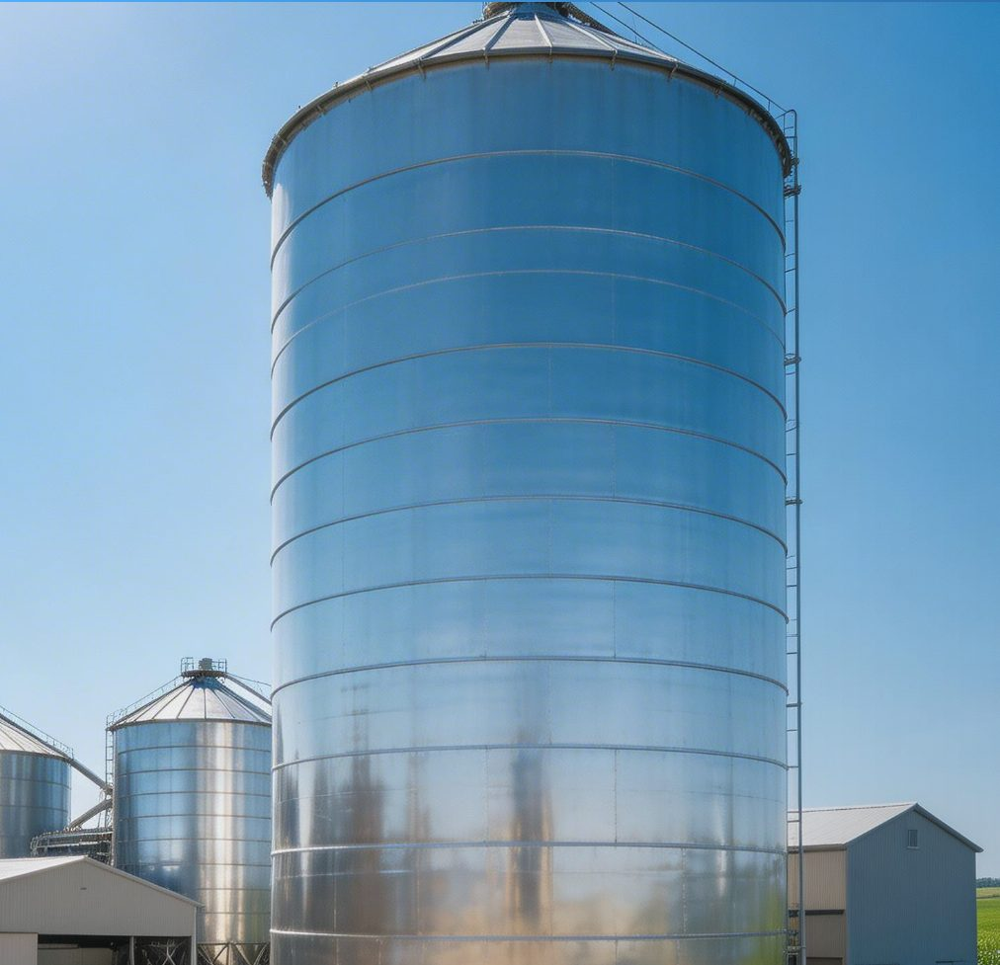
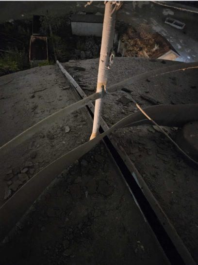
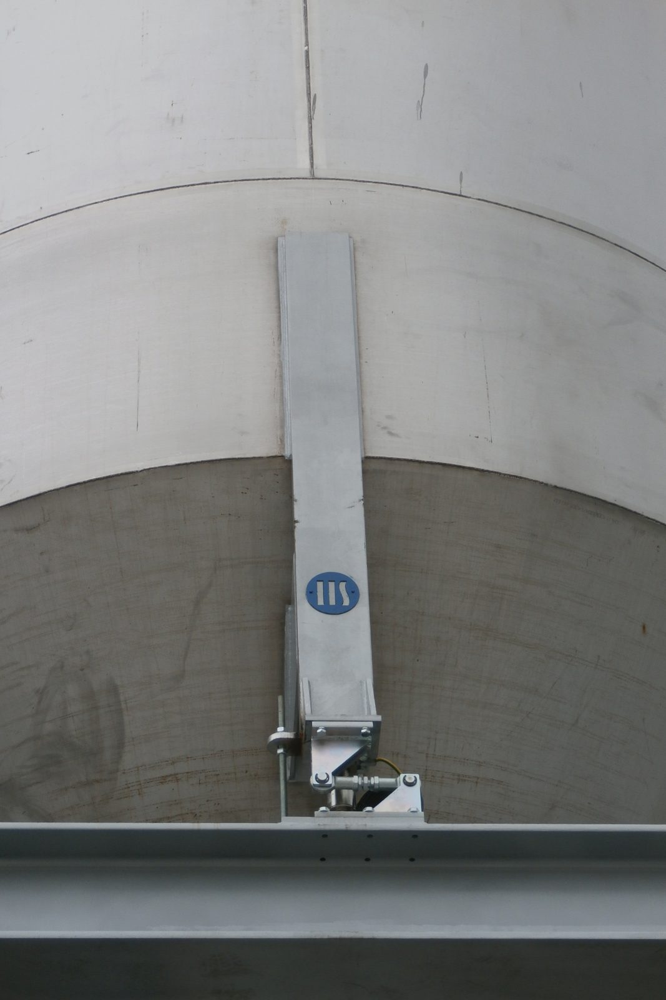
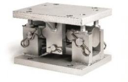
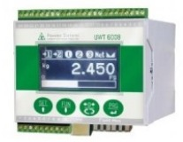
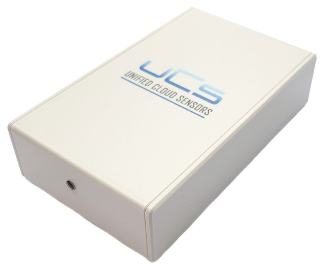
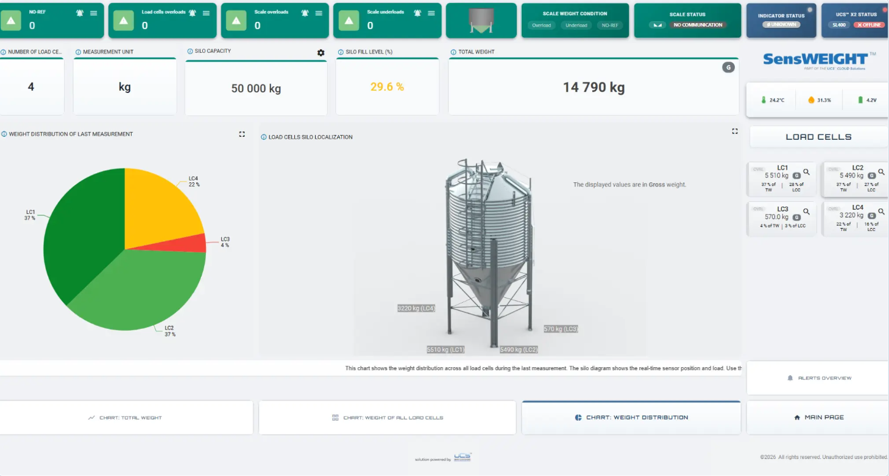

WITHOUT SensSILO
Material bridging hides tonnes you already paid for40 t → 28 t
One leg carries more than its share34% / 25%
Overfill: cleanup and fines€62,480
WITH SensSILO
Exact weight on every leg, live
Alerts before overfill or structural damage
Reorder on consumption data, not guesswork
Bulk storage site, 4 silos. Manual checks and an old level indicator.
4 × siloLC3 carried 27.61%, LC1 only 22.05% — a skew growing silently for months.
5.56%Asymmetric loading heading for structural fatigue cracks within 18 months.
€195,000+Fill pipe repositioned, foundation anchors rebalanced.
€2,400




The entire system costs less than one emergency technician visit. And it never sleeps.

Based on verified site data. Your figures depend on your own silo size and material value.
Assumptions
- Installation
- 4 silos · 4 load cells each
- Monitored load
- 42,410 kg
- Risk basis
- Overfill cleanup and fines + structural failure
Test SensSILO risk free on one of your silos
We lend you the system for a month at no cost. If it doesn’t catch something you missed — walk away.
Know your balance
Exact tonnage per leg, fill velocity, consumption patterns — your silo becomes a transparent account.
Prevent catastrophe
Structural warnings before damage, not after. Overfill alerts before spills, not during.
Plan with data
Stop ordering by guesswork. Start ordering by consumption velocity.